Located in Shanghai now
A student majoring in Digital Media Technology
Wish to study human-computer interaction for the master's degree
(The website is still constructing...)
It is an APP that focuses on historical protection buildings in modern cities like Shanghai,
integrating the different forms of spot introductions and shareable travel records.
My role
Doing researches with one other person
Constructing prototypes of the AR introduction module
Developing AR introduction module and travel records function individually
Also contributed to brainstorming, ideation and testing
Type & Timeline
Group project with other 4 classmates
08/2018-10/2018
The problem
Most travelers are not familiar with those beautiful historical architectures and the stories behind them in Shanghai.
How to attract travelers to visit these spots is the main question.
We set out to solve the following questions:
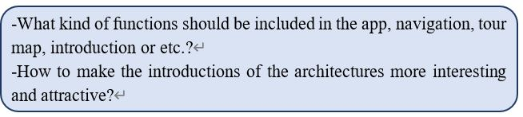
The steps of solving those problems:
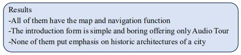
Research
In order to design the functions of our APP, we conducted the market research and user research.
Market research
We analyzed characteristics of different tour APPs by searching information and comparing 5 tour APPs.
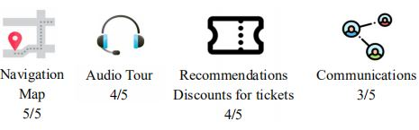
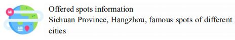
Questionnaire
We also want to know about the reason travelers chose to visit or not to visit historical architectures,
what information travelers want to know when visiting historical architectures and preferences to social media sharing.
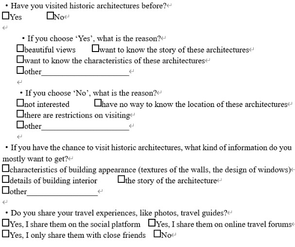
Result
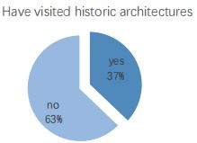
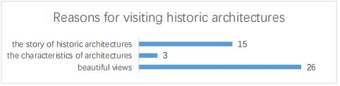
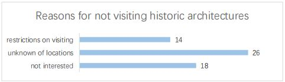
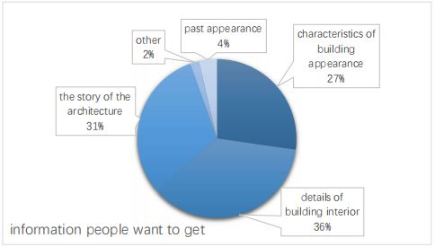
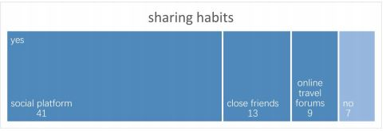
Design
Functions
According to the results of the researches, we brainstormed and designed function modules of this APP.
As there are too many historic architectures in Shanghai, we chose a small region of historical architectures as an example.
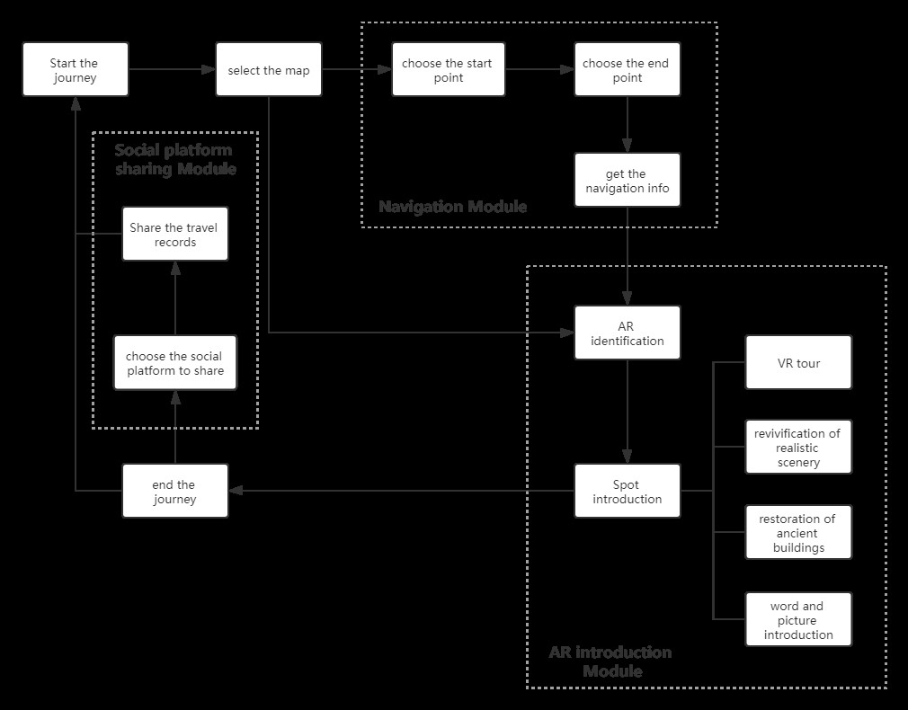
Because most tour APPs have the map and ‘unknown of locations’ is the biggest problem for those people didn’t choose to visit historical architectures, we designed the navigation module.
It contains a hand-drawn map of historical architectures in Shanghai and navigation information.
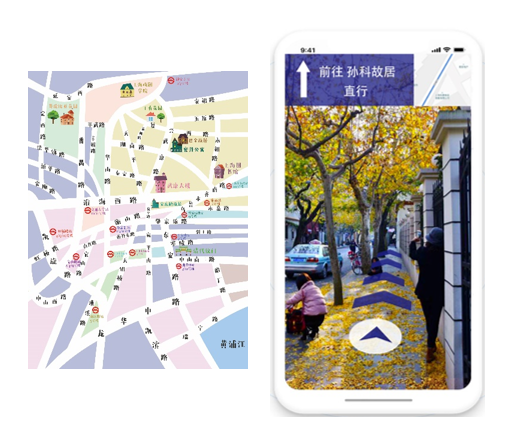
By AR identification, people can get the introductions and details of this spot by scanning the plaque outside the historical architectures even if there are restrictions on step-in visiting.
There are four introduction forms, VR tour, revivification of realistic scenery, restoration of ancient buildings and word and picture introduction, according to the data collected from the questionnaire.
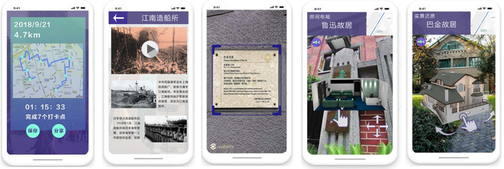
To meet people’s preferences of taking the perfect WeChat Moments snap at an internet-famous site,
we designed a shareable poster, recording the travel time and the place a person visited.
Interactive methods of AR introduction
I made a prototype of two different interactive methods and
invited some people to experience to find out what kind of interactive method is more suitable.
In real usage scenario, people will raise their cell phones to scan the plaque on the wall, and then drop their cell phones.
This leads to that the interaction models will be out of the screen.
Finally, I chose the following mode.
In this mode, however people put their mobile phone, the model will always be in the center of the screen.
Development & Testing
We used Unity to develop the APP and the Vuforia platform to realize AR identification.
Because of the limited information and technology problem, finally the AR introduction part includes VR video,
words and pictures descriptions and easily-observed models.
During the testing, because travelling scene contains too many resources, it needs a long loading time which will make people feel pressing the button is invalid.
Also, a loading scene can visualize the waiting time. So, I added a loading scene between the two scenes.
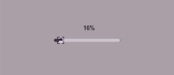
Final Thoughts
Inspirations burst out in a flash of time, but turning inspirations into reality is hard and complicated.
I was quite confused at the beginning. Not until after researches did I start to know what people really need and then conduct the design work.
It was definitely a satisfying project for me.
Undeserved-Ocean
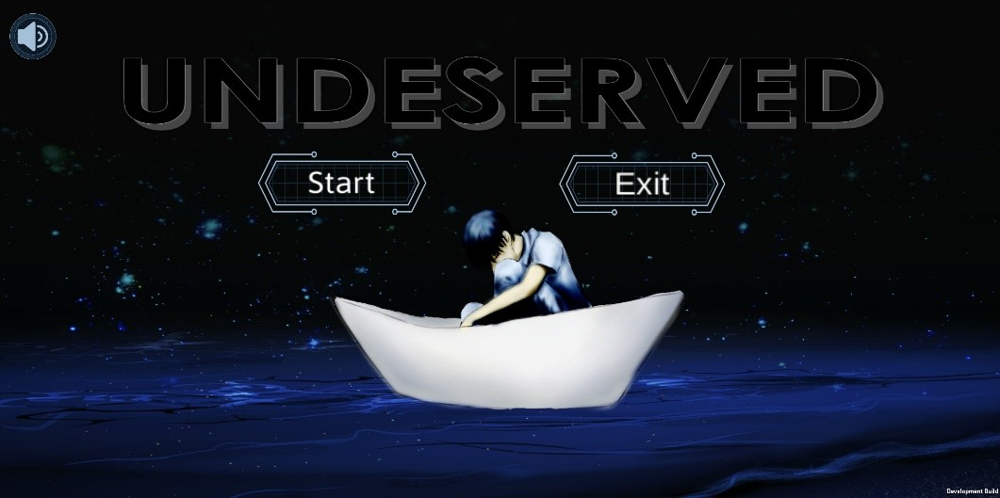
Basic Information
It is a first-person perspective 3D puzzle game.
The story happens in 2091 when the marine environment is extremely deteriorated. Every game level stands for a way to improve the environment. If players pass through all the game levels before the countdown ends,
the marine environment will be restored, otherwise, the ocean will remain deteriorated.
My role
Game planning with one other person
Developing the puzzle game level
Conducting interface design and UI design
Type & Timeline
Group project with other 4 classmates
12/2018-02/2019, 05/2019-06/2019
Game Planning
To awaken people’s awareness of protecting the marine environment, they should both be impacted by the bad result and know ways of how to protect the ocean.
So, the game will have different game levels referring to different ways of protection.
Once players pass through this game level, the environment of the ocean will be improved a little.
Meanwhile, there will be hints between two game levels to make the game more complete.
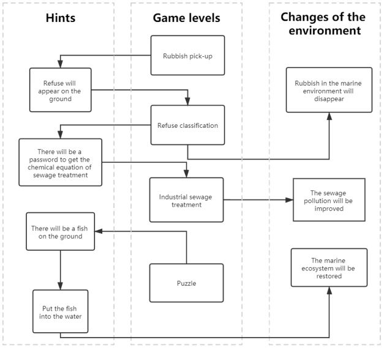
Modules
We designed several systems to manage different functions and modules.
The interactive system is mainly for players’ operations in the game and interacting with objects in the game scene.
Like most of the one-person perspective games, the left part of the screen is designed to be the area of scrolling the view, and the right part of the screen is the area of controlling the movement of the character.
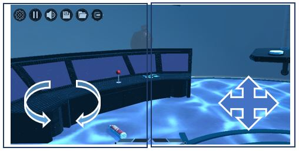
To differentiate interactive objects and non-interactive ones, we set the interactive objects highlighted if it goes into players’ operative area.
Touch the object, and it can be picked up.
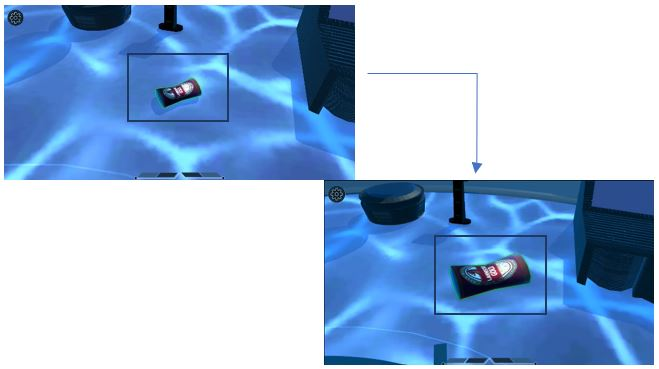
Game levels
Rubbish pick-up
This game level mimics Gold Miner. The hook is fixed on the bottom of the screen, rotating by 180 degrees.
When players touch the screen, the hook will stop rotating and start grabbing.
Refuse classification
Pick up the refuse on the ground and put them into the right rubbish bin.
Password
After passing through the refuse classification, the password will be shown.
By putting in the password, players will get a scroll with a chemistry equation on it.
Industrial sewage treatment
According to the chemistry equation on the scroll, press +/- buttons to make the liquid in two tubes increase or decrease.
Puzzle
Do the puzzle, and players will get a fish the same on the puzzle.
Putting the fish into the water
Pick up the fish and put it into the water.
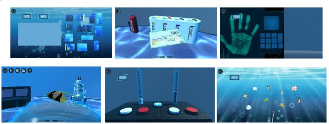
Design
Interface Design
I designed the position and interaction of each system in the interface.
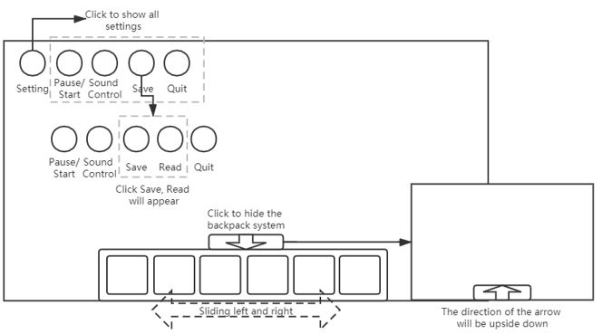
UI Design
Because the game scene is an abandoned laboratory on the seafloor, I chose the dark blue as the main color of all the buttons.
And the use of lines and angular shapes adds a sense of technology.
Logo Design
The background of the logo contains two colors, lighter blue, and deeper blue.
The two colors not only stand for the sky and the ocean but also mean the comparison between the clean and the polluted ocean.
The fish is in the center of the logo, half of it in the lower part and half in the upper part, standing for its struggle and desire to live in the clean ocean.
Development
I used Unity to develop one game level ‘puzzle’. The collision detection detects whether the puzzle pieces are moved into the right place. When one piece is in the right place, the counter will plus one. Finally compare the counter with the number of puzzle pieces,
if the counter equals the number, it means all the puzzle pieces are in the right places,
that is to say, the puzzle is completed.
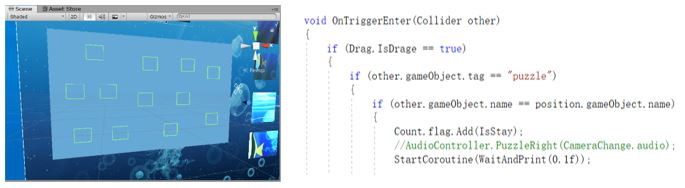
These are collision detection boxes used to detect whether something enters.
Then use the function ‘OnTriggerEnter()’ to trigger the counter.
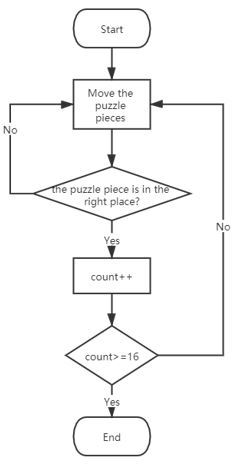
Plant Crush
Basic Information
It is an app combining learning cards and AR technology to popularize plant science.
This combination takes the use of virtual buttons to improve the interactions and learning effects.
It further encourages initiative study with a manor system where the recognized plants can be displayed and studied,
and the element of the game reward mechanism of beautiful shareable recording cards.
My role
Designing the system with one other person
Conducting interface design
Developing AR learning part
Also contributed to market research
Type & Timeline
Group project with other 2 classmates
02/2019-04/2019
The Problem
Our target user is 7-year-old to 9-year-old children.
They face such problems in plant science learning.
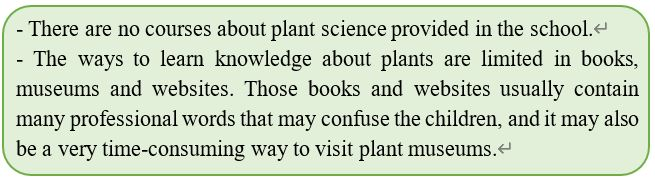
Research
AR plant recognition is very popular these days that many apps and mobile phones support this function.
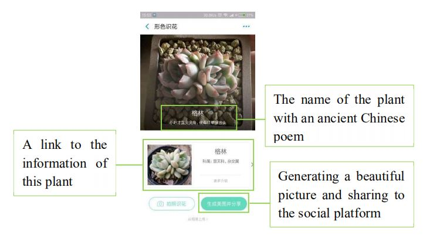
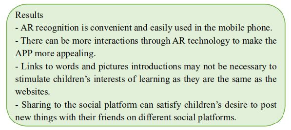
Design
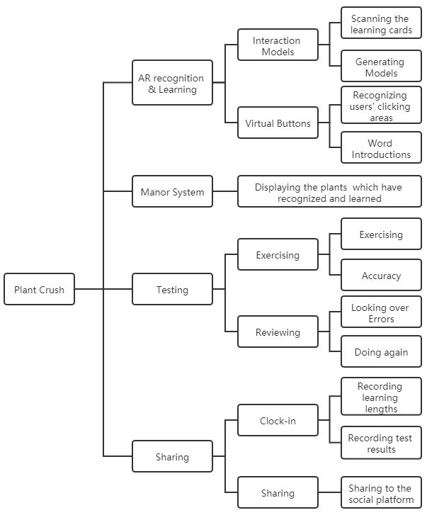
The whole APP simulates the process of adventures.
By AR recognition, children discover different plants and interact with them. After that, their discoveries will be displayed in the manor and can be reviewed at any time anywhere. Finally, after finishing one learning process,
they will receive the adventure reward with a beautiful rewarding card to be shared to the social communication platform.
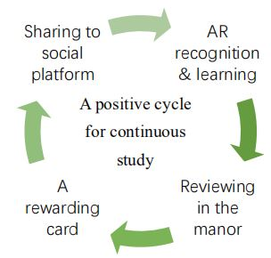
For more interactions, we took use of the virtual buttons placed on different segments of the plant.
In the reality, once children touch those segments, detailed explanations and extensive materials will be presented on the screen.
This may give children a sense of communicating with plants, contributing to the initiative study.
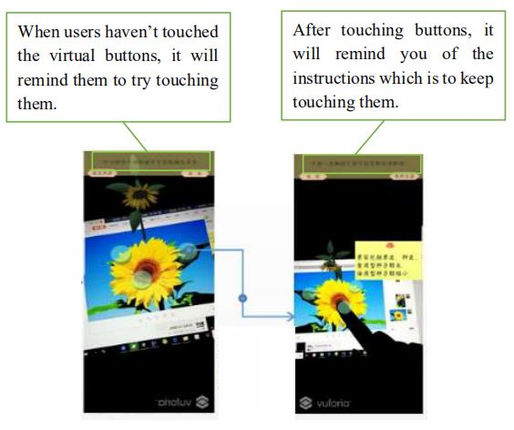
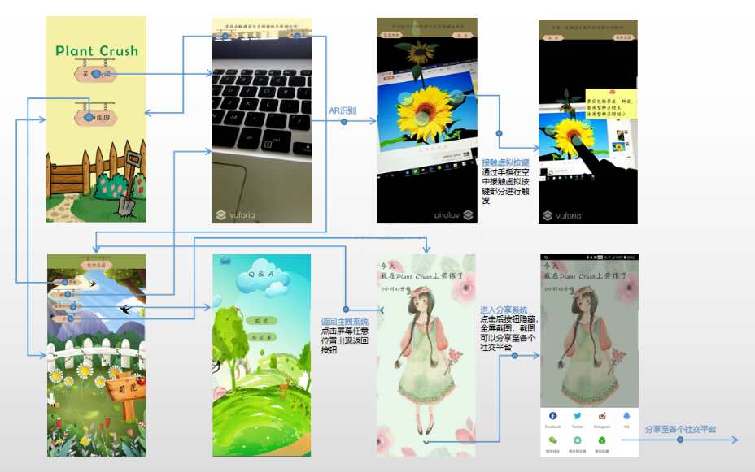
The general flowchart
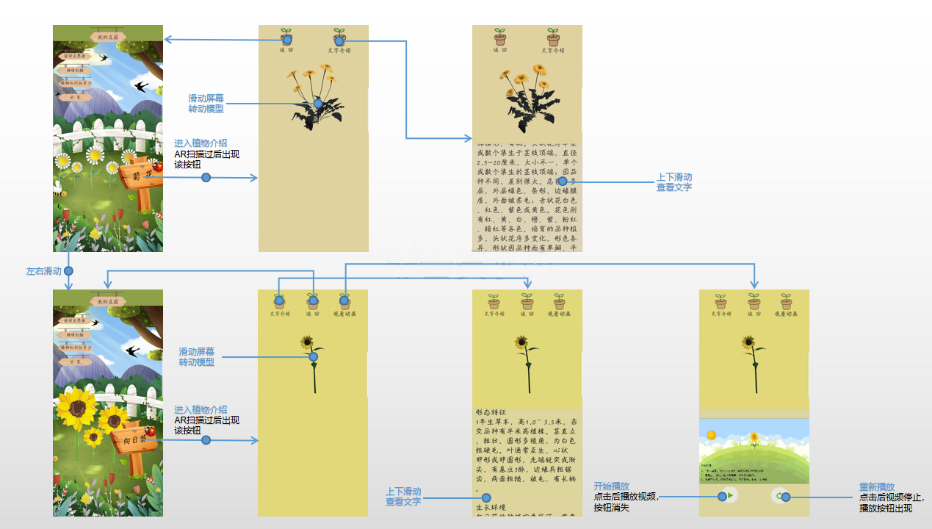
Manor system flowchart
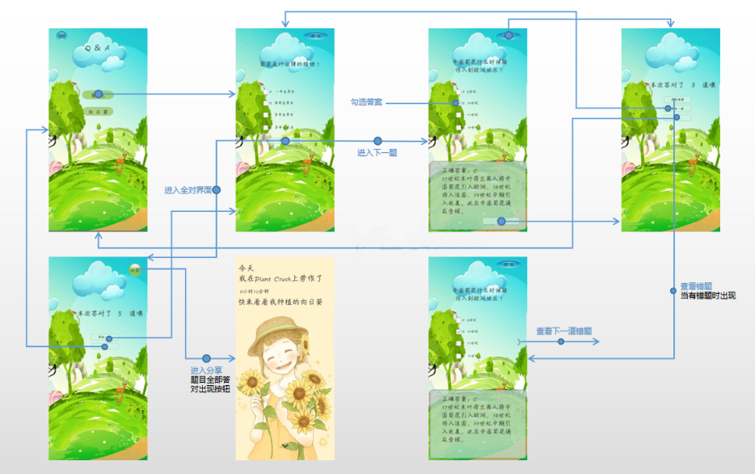
Testing and Sharing system flowchart
Development
We used Unity to develop the APP and the Vuforia platform to realize AR recognition and virtual buttons.
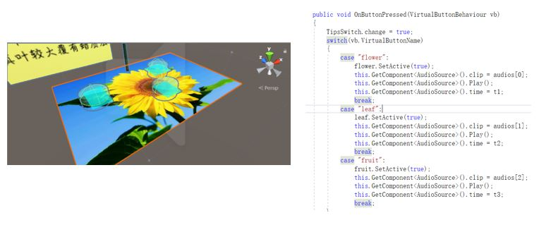
Using Switch statements to trigger the button’s functions according to its name.
Plant Crush
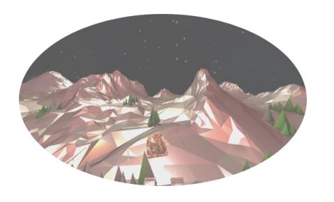
Basic Information
It is a VR music game developing on Unity and HTC Vive with some play methods referring to Audica.
In a completely immersive scene, players raise the gun in their hands and shoot the flying marker according to the music rhythm.
There are plenty forms of interactions combining splendid scene effects with dynamic music.
My role
Designing the game modules with one other member
Designing interactive manners of shooting
Developing music game system, including generating rhythm marker, shooting accuracy judgement
Type & Timeline
Group project with other 3 classmates
04/2019-06/2019
Game Modules Designing
Interactive manners module
- Hitting manners and styles of rhythm marker
We conducted the design work according to the characteristics of the handle.
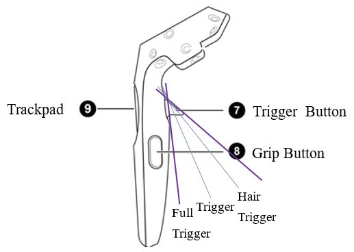
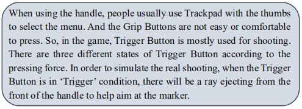
We designed three hitting manners with Trigger Button.
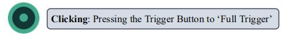
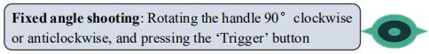
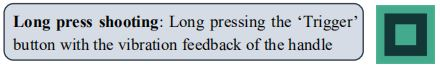
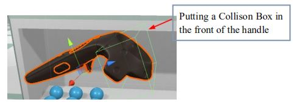
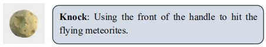
And we utilized different colors to differentiate the left and the right hand
(one can only hit green markers and the other can only hit red markers).
It further increases the diversity and interests of the game.
- Displays of rhythm markers
The rhythm marker contains two parts, the frame and the marker to shoot.
The frame will exist in front of the player, and meanwhile,
a marker will fly towards the player from afar.
We set up the process of the frame's reduction from large to small, so when the marker passes through the frame,
the frame will be reduced to the size matching the marker, at which is the best time for shooting.
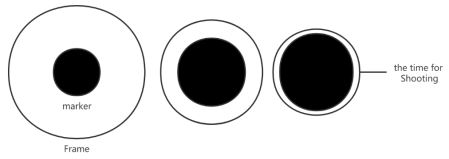
Music rhythm module
We used a Unity plugin Koreographer to visualize the rhythm information of the song.
And according to the music rhythm, insert the point of time for shooting and triggering the marker to generate.
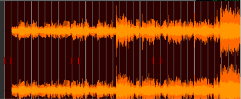
Animation & effects module
We used a spherical skybox to build the scene, creating a vast effect of stars in the universe.
All the models in the scene are adjusted with metal reflective texture to add a sense of Technology.
The meteorite uses bump mapping to increase the three-dimensional sense of reality.
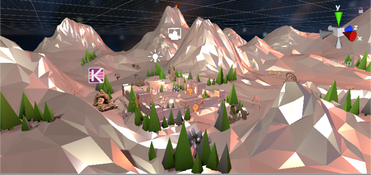
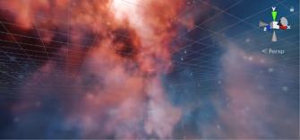
Development
Generation of rhythm markers
Shooting accuracy judgement
I added a collision box around the player ensuring that only when the marker enters this collision box can it be hit by the player.
There are collision boxes on each of the marker and the frame.
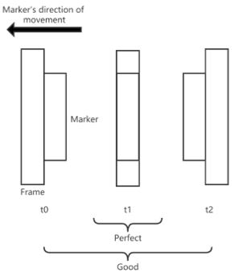
For the clicking, fixed angle shooting and knocking,
I recorded three time points and did some calculations to judge the accuracy
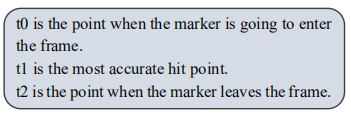
If the marker is hit around t1, it gets a Perfect.
If the marker is hit between t0 and t2, it gets a Good. Otherwise, it gets a Miss.
The accuracy of the long press shooting is judged by long press duration, and the start point of shooting.
The start point judgement is the same as other three shooting methods, while the duration is judged by the time ‘t’ achieved from the xml file.
If the shooting duration is more than half of ‘t’, it gets a Perfect or Good. Otherwise, it gets a Miss.